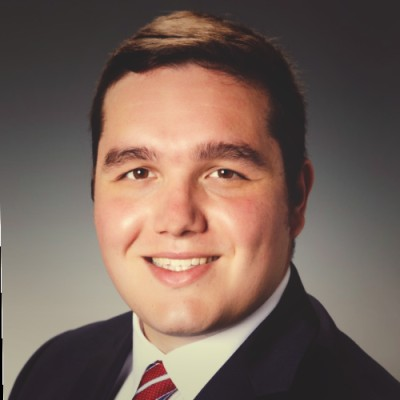
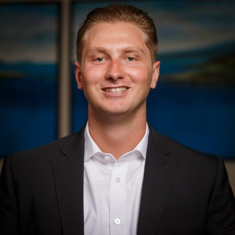
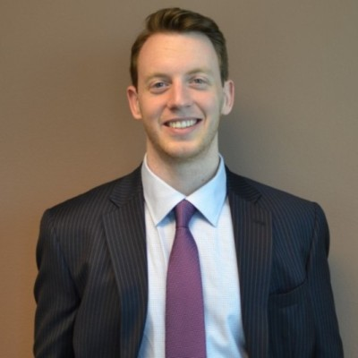
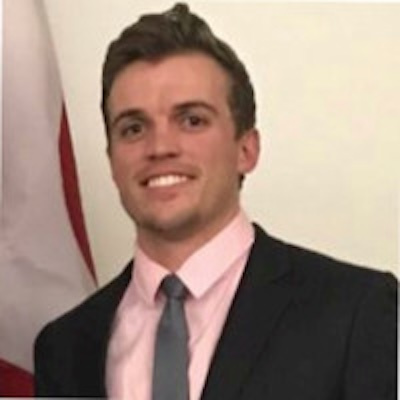
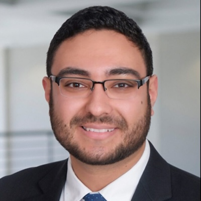

Our focus is tapered, our impact: panoramic. We are The Alumni.
…For the benefit of The Beta Phi Chapter of Theta Chi Fraternity.
Our organization, the Alumni Corporation, is comprised of two major strengths:
a Housing Corporation and an Alumni Association. These two strengths have missions that serve a singular purpose:
the betterment of the undergraduate Beta Phi Chapter of Theta Chi Fraternity.
The Housing Corporation's mission is to plan, manage, and execute housing initiatives.
The Housing corporation's mission is to engage and grow the alumni at large.
The Housing Corporation serves as a stable institution in the eyes of the fraternity, and its community.
In support of this strength, The Alumni Corporation demands the growth and benefit of the alumni.
To meet this requirement, there exists an alumni association.
The alumni association is the home for alumni of The Undergraduate Chapter.
The alumni association grows and fosters the alumni through outreach, activity and service.
Collectively, we make up The Alumni Corporation. In turn, we support the undergraduate chapter.
Alumni Corporation Leadership

Michael DiPrima serves as The Alumni Corporation president.
Michael is a founding member of the Beta Phi Chapter and served as vice president of the fraternity from 2015 - 2016.
Michael also supports the chapter advisory boards and alumni corporations of other undergraduate chapter.
Michael currently resides in Denver, CO.

Matthew Casatico is The Alumni Corporation vice-president and director.
Matthew served as treasurer of the fraternity from 2017 - 2018.
Matthew provides operational advice and support.
Matthew has expertise in finance and budgeting.
Matthew currently resides in the greater San Diego, CA area.

Kyle Sproul serves as treasurer and a director of the Alumni Corporation.
Kyle supports the organization by ensuring compliance with state and federal law, as well as providing general counsel on matters related to housing.
Kyle is an original colonizer and founder of the Beta Phi Chapter.
Kyle served as president of the fraternity from 2012 - 2013.
Kyle currently resides in Sacramento, CA.

Connor Fallon serves as a director of The Alumni Corporation.
Connor ensures financial compliance for the organization's financial accounts.
Connor served as the academic chairmen in 2014 and as president of the fraternity from 2015 - 2016.
Connor currently resides in Boulder, CO.

Daniel Escorcia serves as the president of The Alumni Association.
Daniel is an original colonizer and founder of the Beta Phi Chapter.
Daniel Escorcia served as Treasurer of the fraternity from 2012 - 2014.
Daniel currently resides in San Francisco, CA.